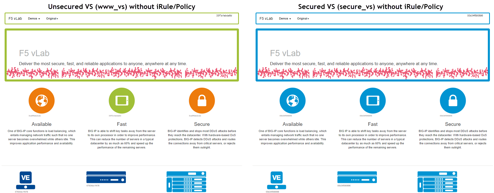
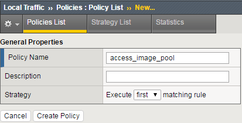
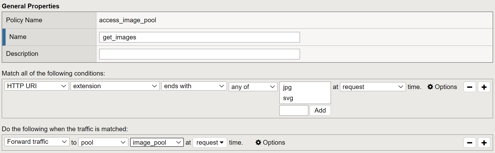
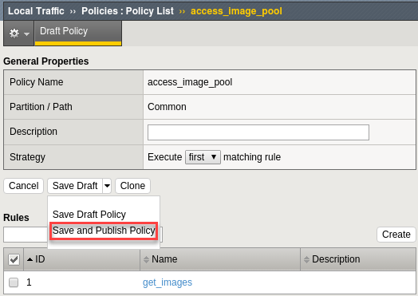
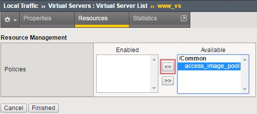

Unofficial - F5 Certification Exam Prep Material > Symposium 2026 - BIG-IP Administrator: Source | Edit on
Lab 4: BIG-IP Policies and iRules
In your customers environment the web servers retrieve images from a different set of servers. In the lab you will write an iRule and create BIG-IP policies so you can compare and contrast the to two methods. iRules are more flexible and customizable, while BIG-IP policies are easier to use, require no coding skills and are a little more efficient when performing the same task.
Write an iRule to retrieve images when an HTTP request is received
When HTTP request is received, look at the HTTP URI. If the URI ends with jpg or svg send the request to an alternate pool of image servers.
- Create a new pool named image_pool, use the http monitor for status and add one member 10.1.20.14:80.
- Go to Local Traffic > iRules > iRules List and select the create
button.
- Names: retrieve_images
- Definition:
# If the content is a jpeg or portable graphic (png) go to the image pool
when HTTP_REQUEST {
if { ([HTTP::uri] ends_with "jpg") or ([HTTP::uri] ends_with "svg") }
{
pool image_pool
}
}
- Select FINISHED
- Note the highlighted content, hover the pointer over HTTP_REQUEST and HTTP::uri to get information on the event and command.
- Go to Local Traffic > Virtual Servers and open the secure_vs
virtual server. Go to the Resources section.
- Under iRules select the Manage button and put the
retrieve_images iRule into the Enabled box and add the
iRule to the virtual server.
- What other profile did this iRule require to work?
- Under iRules select the Manage button and put the
retrieve_images iRule into the Enabled box and add the
iRule to the virtual server.
- Test your iRule by Open up Super Jump Host and go to Guacamole, then Login and use Firefox to Browse to https://10.1.10.105, you will want to use an incognito/private browsing window to avoid cached content.
- Test your iRule. If you browse at your unsecured virtual server (10.1.10.100) you will see there are multiple colors to the images, but browser the secure virtual server and all the image colors are the same because all the images were pulled from the same server (10.1.20.14)


- Where is non-image requests go? You can get an idea by clearing the pool statistics and reloading the page.
Use a BIG-IP Policy to retrieve images from a different pool
In this task you are going to the same thing as above, except you will use a BIG-IP policy.
First you create your policy container and set your match strategy. Try to do this using the instructions, but a screen shot of the policy is available in the Appendix at the end of the lab guide if you would like it.
Go to Local Traffic ›› Policies : Policy List and select Create
- Policy_Name: access_image_pool
- Strategy: Execute first matching rule.
- Create Policy

Now you can create/view policy rules. Select Create.
- Name: get_images
- In the box under Match all the following conditions: select
the + to the right of All traffic
- Use the top drop down menu to select HTTP URI, on the next
line of dropdown boxes select:
- extension ends_with any of (Add jpg and svg) at request time
- Use the top drop down menu to select HTTP URI, on the next
line of dropdown boxes select:
- Under Do the following when the traffic is matched: build the
following operation.
- Forward Traffic to pool Common/image_pool at request time.



- Save
- The policy is saved in Draft form and is not available/update until Published. To publish the policy:
Select the Save Draft Policy drop-down menu and select Save and Publish Policy.


- Go to the Resources section of your secure_vs virtual server.
- For iRules, select Manage and REMOVE the retrieves_images iRule from the virtual server.
- For Policies, select Manage and move access_image_pool from the Available box to the Enabled box and hit Finished


- Test your policy. If you browse at your unsecured virtual server (10.1.10.100) you will see there are multiple colors to the images, but browser the secure virtual server and all the image colors are the same because all the images were pulled from the same server (10.1.20.14). You can also use pools statistics to determine results.